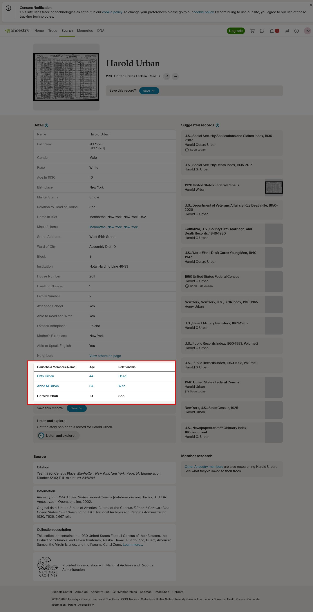
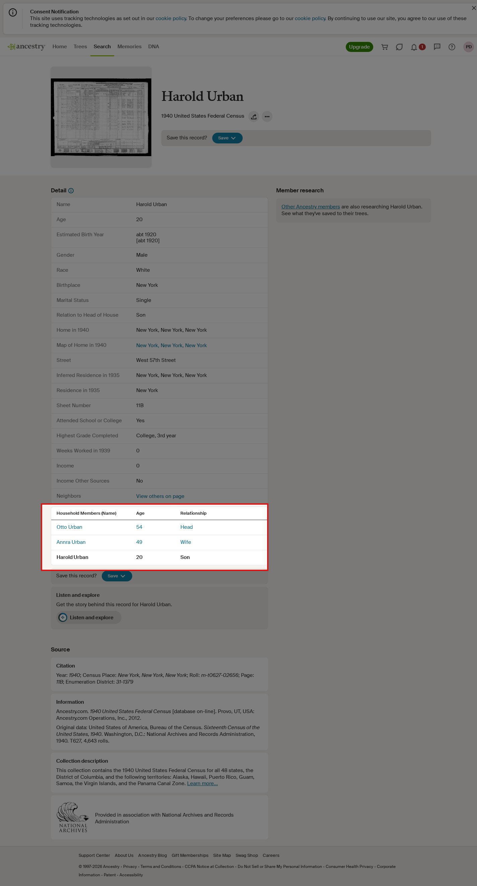
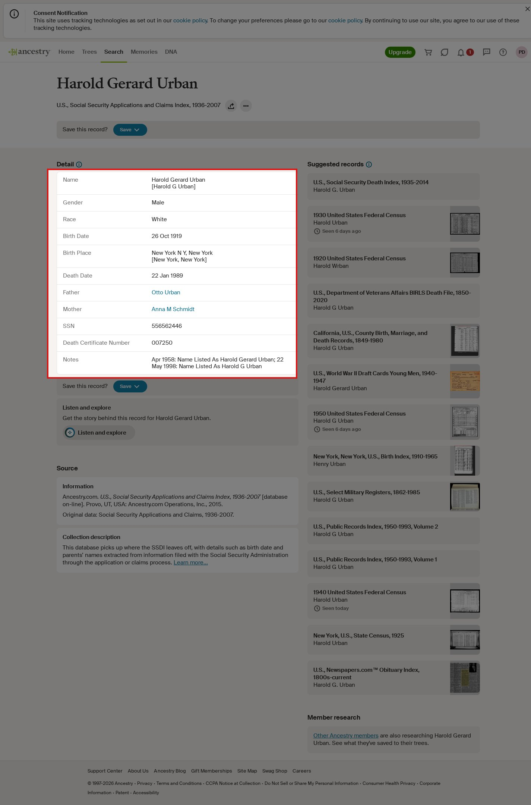

Harold Urban 1919–1989
Great-grandfather of Genevieve Elisa Symanski Nelson, wife of Peter.
Harold Urban was born on 26 Oct 1919 in New York City, New York, United States1, the son of Otto Urban and Anna Schmidt1,2,3,4. He married Gloria Symanski on 9 Jan 1945 in California, United States5. He died on 22 Jan 19891.
Family
- Parents
- Otto Urban and Anna Schmidt documented
- Wife
- Gloria Symanski · married on 9 Jan 1945 in California, United States5
- Children
- Annelisa Urban documented
- Patricia Urban documented
Life events
| Event | Date | Place and details |
|---|---|---|
| Born | 26 Oct 1919 | New York City, New York, United States1 |
| Married | 9 Jan 1945 | with Gloria Symanski California, United States5 |
| Died | 22 Jan 1989 | 1 |
Records




Sources
- NUMIDENT entry for Harold Gerard Urban (1919–1989).
Name: Harold Gerard Urban [Harold G Urban] | Gender: Male | Race: White | Birth Date: 26 Oct 1919 | Birth Place: New York N Y, New York [New York, New York] | Death Date: 22 Jan 1989 | Father: Otto Urban | Mother: Anna M Schmidt | SSN: 556562446 | Death Certificate Number: 007250 | Notes: Apr 1958: Name Listed As Harold Gerard Urban; 22 May 1998: Name Listed As Harold G Urban
Born 26 Oct 1919 in New York, New York; father Otto Urban, mother Anna M Schmidt
- Peter's tree, danenberg.sql, 2007–2015, parentages 67.
- 1930 US Census: Household of Otto Urban, Manhattan, New York.
Name: Harold Urban | Birth Year: abt 1920 [abt 1920] | Gender: Male | Race: White | Age in 1930: 10 | Birthplace: New York | Marital Status: Single | Relation to Head of House: Son | Home in 1930: Manhattan, New York, New York, USA | Map of Home: Manhattan, New York, New York | Street Address: West 54th Street | Ward of City: Assembly Dist 10 | Block: B | Institution: Hotal Harding Line 46-93 | House Number: 201 | Dwelling Number: 1 | Family Number: 2 | Attended School: Yes | Able to Read and Write: Yes | Father's Birthplace: Poland | Mother's Birthplace: New York | Able to Speak English: Yes | Neighbors: View others on page || Household: Otto Urban 44 Head; Anna M Urban 34 Wife; Harold Urban 10 Son
father: Otto Urban; mother: Anna Schmidt
- 1940 US Census: Household of Otto Urban, New York, New York.
Name: Harold Urban | Age: 20 | Estimated Birth Year: abt 1920 [abt 1920] | Gender: Male | Race: White | Birthplace: New York | Marital Status: Single | Relation to Head of House: Son | Home in 1940: New York, New York, New York | Map of Home in 1940: New York, New York, New York | Street: West 57th Street | Inferred Residence in 1935: New York, New York, New York | Residence in 1935: New York | Sheet Number: 11B | Attended School or College: Yes | Highest Grade Completed: College, 3rd year | Weeks Worked in 1939: 0 | Income: 0 | Income Other Sources: No | Neighbors: View others on page || Household: Otto Urban 54 Head; Annra Urban 49 Wife; Harold Urban 20 Son
father: Otto Urban; mother: Anna Schmidt
- Marriage of Gloria Symanski and Harold G Urban, 9 Jan 1945.
Name: Gloria Symanski | Gender: Female | Event Type: Marriage | Marriage Date: 9 Jan 1945 | Marriage Place: Unknown, California, USA | Spouse: Harold G Urban
Married Harold G. Urban on 9 Jan 1945 in California